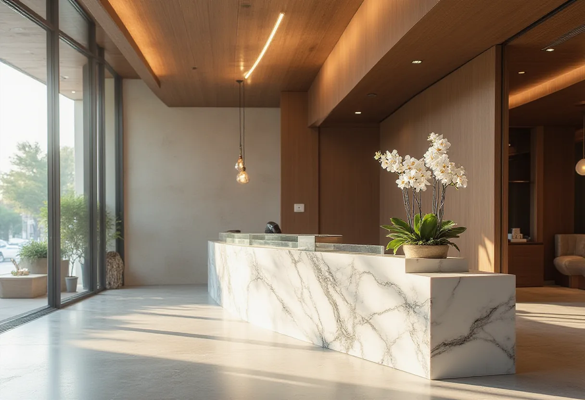

논현 비즈니스클럽

논현 지역 유흥 정보를 한눈에 정리한 허브. 비즈니스 목적부터 개인 휴식까지, 상황별 최적 선택을 제시합니다.
논현 셔츠룸
특징
- 와이셔츠 차림 매니저가 접객하는 중상급 유흥. 밝고 모던한 인테리어와 아담한 룸.
가격대
- 1인 20~40만원 (룸티·주대·TC 포함)
이용 방법
- 2부제 운영, 사전 예약 후 매니저와 매칭.
추천 상황
- 편안하지만 고급스러운 분위기를 원하는 20~40대 직장인·MZ.
논현 룸싸롱
| 항목 | 내용 |
|---|---|
| 특징 | 대형 룸, 샹들리에·대리석·벨벳 소파, 방음 완비. 매니저 동석. |
| 가격대 | 1인 30~70만원 (룸티·주대·TC 포함) |
| 이용 방법 | 1부(저녁)·2부(심야) 운영, 2부가 고가. |
| 추천 상황 | 기업 임원 접대·VIP 비즈니스 미팅. |
논현 텐프로
극소수 최상위 1%를 위한 프라이버시와 명품 가구·미술품이 어우러진 공간. 가격표는 공개되지 않으며, 지인 소개와 회원제 운영이 핵심.
- 가격: 1인 50~100만원 이상, 가격표 비공개.
- 이용 방법: 회원제·지인 초대 필수, 발렛·전용 출입구 제공.
- 추천 상황: 기업 오너·유명인·재력가 대상의 절대적 프라이버시 필요 시.
논현 텐카페
카페와 라운지를 결합한 하이브리드 공간으로, 술보다 매니저와의 대화가 메인입니다. 낮 시간대 영업이 가능하며, 고급 카페 인테리어가 돋보입니다.
- 가격대: 1인 20~40만원 (음료·룸티·TC 포함, 시간당 연장 가능)
- 이용 방법: 사전 예약 후 매니저와 1:1 대화.
- 추천 상황: 술이 부담스러운 고객·조용한 대화 선호층.
논현 쩜오
텐프로 바로 아래, 룸살롱 위의 고급 라운지·룸 하이브리드. 어두운 은은한 분위기와 재즈·라운지 음악이 특징이며, 전문직 고객을 공략합니다.
- 가격대
- 1인 40~70만원
- 이용 방법
- 예약제, 매니저와 교양 대화 중심.
- 추천 상황
- 룸살롱은 싫고 텐프로는 부담스러운 직장인·전문의.
논현 하이퍼블릭
룸살롱과 셔츠룸 사이의 하이브리드. 캐주얼하고 오픈된 바 형태에 네온 사인과 감각적 조명이 어우러집니다.
- 가격대: 1인 15~30만원, 맥주 등 주류 자유 선택.
- 이용 방법: 입장 후 바 좌석 또는 룸 선택.
- 추천 상황: 2차 장소로 가볍게 이어갈 20~40대.
논현 풀싸롱
룸살롱·식사·노래방·공연이 한 공간에 결합된 올인원 풀코스 유흥. 뷔페·식사 포함 1인 20~40만원 패키지.
- 특징: 넓은 홀·룸·식당·무대, 각 룸에 노래방 기기.
- 추천 상황: 단체 회식·동창회·송년회 등 이동 없이 전체 진행.
논현 가라오케
노래방 설비와 주류·안주가 결합된 접객 업소. 최신 곡 리스트와 고음질 음향을 제공하며, 회식 2차·단체 모임에 적합합니다.
- 가격대
- 룸당 1인당 10~30만원 (주류·안주 포함)
- 특징
- 방음 룸, 최신 곡, 고음질 사운드.
논현 노래방
코인노래방과 일반 노래방이 혼재. 최신곡 업데이트와 청결한 부스로 선택 기준이 됩니다.
- 코인: 곡당 500~1,000원
- 일반: 시간당 15,000~25,000원
- 주류 판매 여부는 업소마다 상이.
논현 마사지
스웨디시식 전신 오일 마사지를 중심으로 한 힐링 테라피. 코스별 6~15만원(60~120분)이며, 아로마·스톤·딥티슈 옵션이 제공됩니다.
- 특징
- 1인 프라이빗 룸, 샤워실 구비, 숙련된 테라피스트.
- 가격대
- 6~15만원 (코스 및 옵션에 따라 변동)
- 추천 상황
- 직장인 피로 회복·정기 방문을 원하는 고객.
논현 펍
수제 맥주와 안주를 제공하는 캐주얼 주점. 맥주 6,000~9,000원, 안주 8,000~15,000원 수준이며, 바 카운터와 테이블 좌석을 갖추고 있습니다.
- 특징
- 라이브 음악·스포츠 중계 등 분위기 연출.
- 추천 상황
- 가벼운 저녁 모임·1차 자리에 적합.
자주 묻는 질문
- 논현 비즈니스클럽과 일반 룸싸롱의 차이는 무엇인가요?
- 비즈니스클럽은 격식 있는 프라이빗 룸과 조용한 미팅 공간을 제공해 기업 접대에 적합합니다. 룸싸롱은 고급스러운 분위기와 대규모 접객을 강조합니다.
- 텐프로와 텐카페는 어떻게 다른가요?
- 텐프로는 최상위 1% 전용 고가 프라이버시 공간이며 회원제와 발렛 서비스를 갖추고 있습니다. 텐카페는 카페와 라운지를 결합해 음료와 대화가 메인이며 술보다 대화가 중심입니다.
- 하이퍼블릭은 2차 모임에 적합한 이유는?
- 오픈 바 형태에 네온 조명과 자유로운 주류 선택이 가능해 편안한 분위기에서 가볍게 이어가기 좋으며, 가격대도 1인 15~30만원으로 접근성이 높습니다.
- 마사지와 풀싸롱을 동시에 이용하려면 어떤 점을 확인해야 하나요?
- 각 시설의 운영 시간과 사전 예약 정책을 확인하고, 위생 및 프라이버시 관리 기준이 동일한지 검증 후 이용하면 안전하고 만족도 높은 경험을 할 수 있습니다.
한빛 로컬가이드 – 논현 지역 유흥 정보를 5년간 정리해온 로컬 가이드. 현장 경험을 바탕으로 객관적인 정보를 제공하고 있습니다.